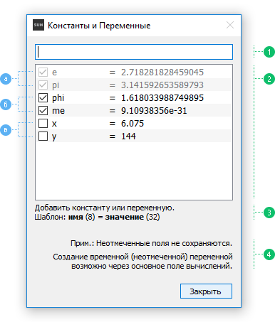

Чтобы добавить константу или переменную, напишите назначение по Шаблону (изображение ниже - 3) и нажмите Ввод (Enter). Если назначение допустимо, то оно появится в списке отмеченным - как постоянное. Добавление временной (неотмеченной) переменной также возможно через Поле Вычислений (смотр. Константы и переменные - «Назначение переменной»).
Постоянные константы и переменные (изображение ниже - б) сохраняются и доступны через сессии, в отличие от временных (неотмеченных), которые доступны лишь в рамках текущей сессии, и удаляются после выхода из программы. Таким образом, если вы имеете в Истории вычисление с временной переменной, и хотите использовать его, то данная переменная не будет доступна, и покажется сообщение об ошибке. Поэтому рекомендуется назначать временные переменные через Поле Вычислений (смотр. Константы и переменные - «Назначение переменной»), имея таким образом шанс найти назначение недостающей переменной в Истории.
Временные переменные (изображении ниже - в) могут быть отмечены в любое время в рамках текущей сессии, перед выходом из программы, превращаясь таким образом в постоянные.
Все записи в списке, кроме встроенных констант (изображение ниже - а), могут быть удалены через контекстное меню или клавишей Delete.

Диалог Константы и Переменные.
1. Поле ввода - смотр. Шаблон для добавления константы или переменной, 2. Список констант и переменных, 3. Статус и Шаблон - показывает также ошибки, 4. Примечание.
a) Встроенные константы - недоступны для редактирования, b) Постоянные - отмеченные, c) Временные - неотмеченные (будут удалены после выхода из программы).
Допустимые символы для ввода имени - буквы верхнего и нижнего регистра, символ нижнего подчеркивания «_», и, за исключением первого символа, цифры от 0 до 9 (максимальная длина в скобках).
Допустимые числа для ввода значения - целые, десятичные, двоичные, восьмеричные и шестнадцатеричные (максимальная длина в скобках).
Смотр. Вычисления - «Лексический анализ» для доп. информации.